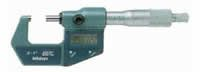

Una decisión importante a la hora de la ejecución de un proceso de mecanizado, es la de seleccionar el útil de medida necesario para determinar si la pieza mecanizada cumple las especificaciones del plano.
Existen gran cantidad de útiles de medida, pero en este punto vamos a aprender a seleccionarlos, en función de las especificaciones. No es lo mismo medir con un calibre que con un instrumento láser, por un lado por su coste y por otro por el mantenimiento que requieren ambos instrumentos.

En este punto se pretende analizar la selección de los útiles de medida más comunes, dejando a un lado la incertidumbre, suponiendo que los instrumentos de medida están calibrados y en perfectas condiciones.